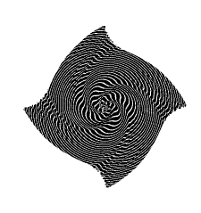

CS184/284A Spring 2025 Homework 1 Write-Up
Link to webpage: https://cal-cs184-student.github.io/hw-webpages-drsigma/hw1/index.html
Link to GitHub repository: https://github.com/cal-cs184-student/sp25-hw1-tea
Overview
This assignment introduces a basic rasterization pipeline and involves a lot of exercises for different sampling methods. By completing this assignment I praticed antialiasing methods using supersampling, pixel sampling, and mipmap level sampling methods. As a results I am able to render various .svg files using the functions I implemented.
Task 1: Drawing Single-Color Triangles
I implemented a triangle rasterizer in Task 1, where I used a nested for-loop to iterate through the bounding box of a given triangle (using max and min of all vertices). Then for each pixel in the bounding box, the pixel is checked using the three line equations of the triangle edges to see if a given pixel is inside. If it is inside the triangle or on the edge, the corresponding pixel is filled in with input color. Before iterating through the triangles, I also check for the winding direction of the vertices. This is done by taking a cross product of two adjacent edges, and if the triangle is not CCW, I make it so by switching two of the veritices.
Below are examples showing the successful implementation of Task 1.

|

|
Task 2: Antialiasing by Supersampling
For this task I implemented a supersampling method for antialiasing. In order to perform the supersampling
at given sampling rate, I had to modify several functions. First, instead of directly sampling
and filling in colors at each pixel location, I changed the sample buffer such that it is larger
than the frame buffer by a factor of the sample rate so that it can contain all the sampled color information.
This means editing the rasterize_triangle() fucntion so that it no longer calls fill_pixel(),
and instead fills colors into the sample buffer. Then, all the colors corresponding to the same pixel in the sample
buffer are averaged in the resolve_to_framebuffer() function. I also had to modify the fill_pixel()
function so that it fills in all locations in the sample buffer that correspond to the same pixel with the same color. This
is required since functions drawing points and lines are relying on this function.
The successful implementation of this supersampling algorithm can be seen in the examples below. The sampling rate value corresponds to how many samples are taken within one pixel. With increasing sampling rate, the edges of the triangles appear less and less jagged using supersampling as the antialiasing method.
|
|

|
|
|

|
Task 3: Transforms
For this task, I implemented the three functions in the transforms classs translate,
rotate, and scale. Each of these functions takes 2D transform inputs and
outputs the 3-by-3 matrix used in applying transformations using homoegeneous coordinates.
The images below shows how I can use the transform functions to draw different motions. My robot is doing jumping jacks in the pictures.

|
|
Task 4: Barycentric coordinates
For this task I reused most my code in Task 1 and whenever a sample location is inside the triangle, I computed the Barycentric coordinates for that sample location. The coordinate values are then used to compute the color of the sample. The color wheel in Test 7 is visualized below.

|
Task 5: "Pixel sampling" for texture mapping
Two pixel sampling methods are implemented in this task: nearest and bilinear sampling. I reused most of the rasteriztion code from previous tasks, and instead of using barycentric coordinates to perform color interpolation, I am using it to interpolate for the correct (u,v) texture coordinates. In the rasterization pipeline, the (u,v) coordinates of the corners are also flipped if the triangle is not already counter-clockwise.
For each sample location, texture sampling is performed. For linear sampling, this means using the interpolated (u,v) coordinates and mapping it to the nearest texel color. For bilinear sampling, the nearest four texel colors are used, and then interpolated using the bilinear interpolation method.
As a result, both sampling methods can be used to rasterize an image. From the example shown below, it is obvious that nearest sampling creates some aliasing effect on small features. For example the equator and longtitude lines appear broken or jagged in some locations when using nearest sampling, whereas bilinear filtering reduces this effect. This effect becomes less apparent when using higher sampling frequency which also has antialiasing effect.
|
|
|
|
|
|
Task 6: "Level Sampling" with mipmaps for texture mapping
In this task three different level sampling methods are implemented: zero, nearest, and linear interpolation.
zero level sampling means always using the full resolution texture map, where as the other two methods use mipmapping
and either uses the most appropriate level of texuture map or uses the interpolated color value between two adjacent texture maps.
In order to perform these different types of texture mapping I implemented the functions Texture::sample() and
Texture::get_level(). Then I just need to call the sampling function in the rasterization pipeline and pass in
the desired methods.
How different texutre map levels are used on a single image can be visualized in the image below. Here 0th level would be denoted as the color black and the heightest possible mipmap level is encoded with white. From the given examples, test5 and text6 seem to show the mipmapping effect most clearly.
|
|
|
Using one of the provided examples, the effect of level sampling can be compared. Both nearest and linear methods have antialiasing effects, but in this case the linear interpolation methods seems to perserve more small details of the campanile.
|
L_ZERO, P_NEAREST |
L_NEAREST, P_NEAREST |
L_LINEAR, P_NEAREST |
As a final remark about all the sampling methods implemented so far, the cheapest methods
in pixel sampling, level sampling, and supersampling are P_NEAREST, L_ZERO,
and rate=1, respectively. But all of these methods result in some aliasing effects inevitably.
Among these methods, bilinear interpolation pixel sampling is perhaps more memory efficient since it doesn't require storing mipmap
of the same texture or increasing the sample buffer size, while this method still requires performing more operations
and thus reduces the computation speed. Supersampling is more memory-consuming than level sampling, since the space
required to store the sampled colors scale up very quckly, but as shown in the example below, despite the inefficiency
in time and memory, supersampling appears to be the most effective method in antialiasing. Level sampling, while more memory efficent
than supersampling, appears to have a blurring effect, casuing the image to lose some details during this process.
The example below shows a detailed comparison between all the sampling methods explored in this assignment.
|
|
|
L_ZERO, P_NEAREST |
L_ZERO, P_LINEAR |
L_NEAREST, P_NEAREST |
L_NEAREST, P_LINEAR |
|

L_ZERO, P_NEAREST |
L_ZERO, P_LINEAR |
L_NEAREST, P_NEAREST |
L_NEAREST, P_LINEAR |
|
L_ZERO, P_NEAREST |
L_ZERO, P_LINEAR |
L_NEAREST, P_NEAREST |
L_NEAREST, P_LINEAR |